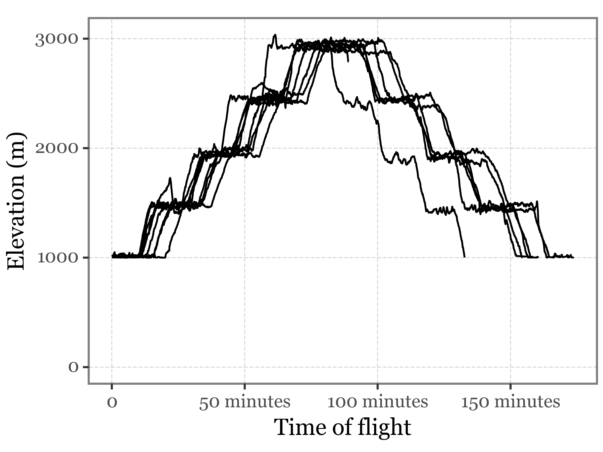
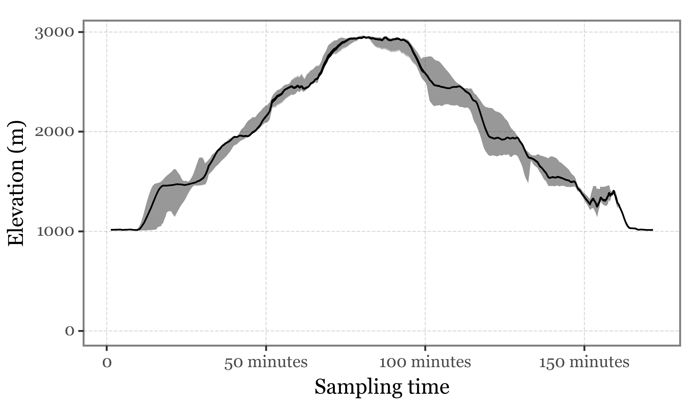
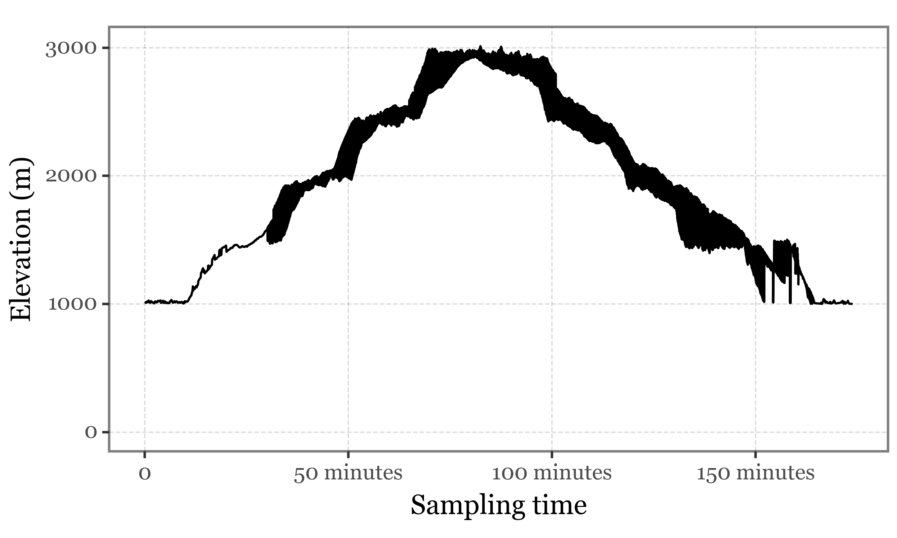
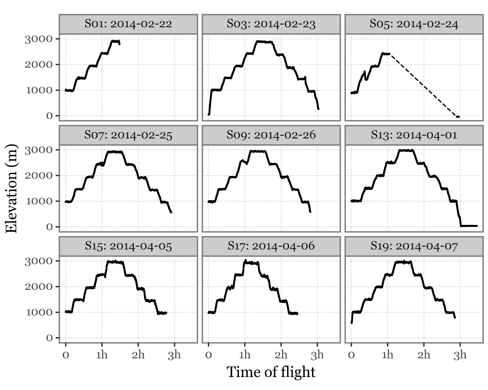
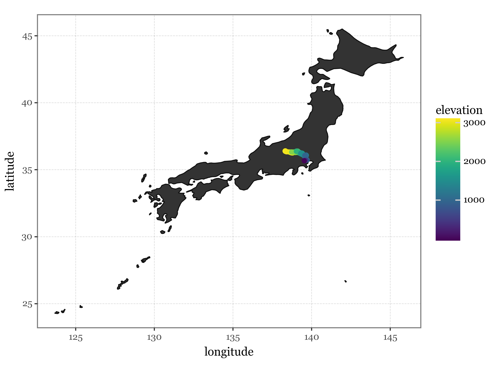

import os
import gpxpy
import requests
import numpy as np
import pandas as pd
import xarray as xr
from glob import glob
import plotnine as p9
import geopandas as gpd
import matplotlib.pyplot as plt
from matplotlib_inline.backend_inline import set_matplotlib_formats# Matplotlib settings
plt.rcParams['font.family'] = 'Georgia'
plt.rcParams['svg.fonttype'] = 'none'
set_matplotlib_formats('retina')
plt.rcParams['figure.dpi'] = 300
# Plotnine settings (for figures)
p9.options.set_option('base_family', 'Georgia')
p9.theme_set(
p9.theme_bw()
+ p9.theme(panel_grid=p9.element_blank(),
legend_background=p9.element_blank(),
panel_grid_major=p9.element_line(size=.5, linetype='dashed',
alpha=.15, color='black'),
plot_title=p9.element_text(ha='center'),
dpi=300
)
)<plotnine.themes.theme_bw.theme_bw at 0x16412a7d0>dfs = []
for file in glob('../data/flight_gps/*.gpx'):
if 'Track' in file:
flight = gpxpy.parse(open(file))
points = []
for segment in flight.tracks[0].segments:
for p in segment.points:
points.append({
'time': p.time,
'latitude': p.latitude,
'longitude': p.longitude,
'elevation': p.elevation,
})
dfs.append(pd.DataFrame.from_records(points).assign(flight=file))
dfs = (pd.concat(dfs)
.assign(date=lambda dd: dd.time.dt.date)
.groupby('date', as_index=False)
.apply(lambda dd: dd.assign(timedelta=dd.time - dd.time.min()))
)dfs.groupby('date')date
2014-02-22 0 0 NaN
1 NaN
2 NaN
3 NaN
4 NaN
...
2014-04-07 8 2051 818.894
2052 NaN
2053 NaN
2054 NaN
2055 NaN
Name: elevation, Length: 16483, dtype: float642150 * 1.032214.5(dfs
.groupby('date')
.apply(lambda dd: dd.assign(elevation= dd.elevation.rolling(1, center=True).mean()))
.query('elevation >= 1000')
.pipe(lambda dd: p9.ggplot(dd)
+ p9.aes('timedelta', 'elevation')
+ p9.geom_line(p9.aes(group='flight'))
+ p9.theme(figure_size=(4, 3))
+ p9.scale_y_continuous(limits=(0, None))
+ p9.labs(x='Time of flight', y='Elevation (m)')
)
)
(dfs
.query('elevation >= 1000')
.groupby(['timedelta'])
.agg(
median=('elevation', 'median'),
q025=('elevation', lambda x: x.quantile(.025)),
q975=('elevation', lambda x: x.quantile(.975))
)
.apply(lambda x: x.rolling(30, center=True).mean())
.dropna()
.reset_index()
.pipe(lambda dd: p9.ggplot(dd)
+ p9.aes('timedelta', 'median')
+ p9.geom_ribbon(p9.aes(ymin='q025', ymax='q975'), alpha=.5)
+ p9.geom_line()
+ p9.theme(figure_size=(5, 3))
+ p9.scale_y_continuous(limits=(0, None))
+ p9.labs(x='Sampling time', y='Elevation (m)')
)
)
(dfs
.query('elevation >= 1000')
.pipe(lambda dd: p9.ggplot(dd)
+ p9.aes('timedelta', 'elevation', group='date')
+ p9.stat_summary(fun_y=np.mean, geom='line', group=1)
+ p9.theme(figure_size=(5, 3))
+ p9.scale_y_continuous(limits=(0, None))
+ p9.labs(x='Sampling time', y='Elevation (m)')
)
)
(dfs
.groupby('flight', as_index=False)
.apply(lambda dd: dd.assign(timedelta=dd.time - dd.time.min()))
.assign(flight=lambda dd: dd.flight.str.split('.').str[0].str[6:])
.assign(time_since_last=lambda dd: dd.time.diff())
.loc[lambda dd: dd['time_since_last'] < pd.to_timedelta("10 min")]
.sort_values('time_since_last')
)| time | latitude | longitude | elevation | flight | timedelta | time_since_last | |||
|---|---|---|---|---|---|---|---|---|---|
| 4 | 4 | 0 | 2014-02-22 04:23:10+00:00 | 35.705112 | 139.693024 | 992.70 | 22-FEB-14 055211 | 0 days 00:00:00 | -45 days +22:24:36 |
| 7 | 7 | 481 | 2014-02-24 03:44:29+00:00 | 36.378784 | 139.046143 | 1934.31 | 24-FEB-14 060218 | 0 days 00:40:04 | 0 days 00:00:04 |
| 1 | 1 | 803 | 2014-04-05 03:56:13+00:00 | 36.350403 | 138.807526 | 2614.44 | 05-ABR-14 063542 | 0 days 01:06:52 | 0 days 00:00:04 |
| 7 | 7 | 620 | 2014-02-24 03:56:03+00:00 | 36.285625 | 138.851639 | 2446.69 | 24-FEB-14 060218 | 0 days 00:51:38 | 0 days 00:00:04 |
| 8 | 8 | 380 | 2014-02-25 03:50:39+00:00 | 35.089394 | 139.429077 | 1738.68 | 25-FEB-14 061343 | 0 days 00:31:39 | 0 days 00:00:04 |
| ... | ... | ... | ... | ... | ... | ... | ... | ... | ... |
| 9 | 9 | 2023 | 2014-02-26 06:13:39+00:00 | 35.719494 | 139.641830 | 584.14 | 26-FEB-14 061335 | 0 days 02:48:35 | 0 days 00:00:05 |
| 3 | 3 | 362 | 2014-04-07 03:37:29+00:00 | 36.137989 | 139.313309 | 1494.51 | 07-ABR-14 065833 | 0 days 00:30:11 | 0 days 00:00:06 |
| 8 | 8 | 1189 | 2014-02-25 04:58:05+00:00 | 34.563652 | 139.066391 | 2512.06 | 25-FEB-14 061343 | 0 days 01:39:05 | 0 days 00:00:06 |
| 1212 | 2014-02-25 05:00:01+00:00 | 34.608448 | 139.053665 | 2443.33 | 25-FEB-14 061343 | 0 days 01:41:01 | 0 days 00:00:06 | ||
| 6 | 6 | 0 | 2014-02-23 04:27:08+00:00 | 36.387970 | 138.302109 | 2888.90 | 23-FEB-14 055646 | 0 days 00:00:00 | 0 days 00:00:11 |
16474 rows × 7 columns
from datetime import timedeltadatetime.timedelta(seconds=3600)(dfs
.assign(date=lambda dd: dd.time.dt.date)
.sort_values('time')
.timedelta.dt.total_seconds() / 60
)4 0 0.000000
1 0.083333
2 0.166667
3 0.250000
4 0.333333
...
3 2051 170.933333
2052 171.016667
2053 171.100000
2054 171.183333
2055 171.266667
Name: timedelta, Length: 16483, dtype: float64dates = ['2014-02-22', '2014-02-23', '2014-02-24', '2014-02-25', '2014-02-26',
'2014-04-01', '2014-04-05', '2014-04-06', '2014-04-07', '2014-04-08']
samples = ['S01', 'S03', 'S05', 'S07', 'S09', 'S13', 'S15', 'S17', 'S19', 'S21']samples_df = pd.DataFrame(dict(date=dates, sample_id=samples)).assign(date=lambda dd: pd.to_datetime(dd.date))(dfs
.assign(date=lambda dd: pd.to_datetime(dd.time.dt.date))
.sort_values('time')
.groupby('date', as_index=False)
.apply(lambda dd: dd.assign(timedelta=(dd.time - dd.time.min()).dt.total_seconds() / 60)
.assign(time_since_last=lambda dd: dd.timedelta.diff())
.loc[lambda dd: dd['time_since_last'] < 10]
)
.assign(flight=lambda dd: dd.flight.str.split('.').str[0].str[6:])
.merge(samples_df, on='date')
.assign(label=lambda dd: dd.sample_id + ': ' + dd.date.astype(str))
.pipe(lambda dd: p9.ggplot(dd)
+ p9.aes('timedelta', 'elevation')
+ p9.geom_line(p9.aes(group='flight'), linetype='dashed')
+ p9.scale_x_continuous(breaks=[0, 60, 120, 180], labels=['0', '1h', '2h', '3h'])
+ p9.geom_point(size=0, stroke=.4)
+ p9.labs(x='Time of flight', y='Elevation (m)')
+ p9.facet_wrap('label')
+ p9.theme(figure_size=(5, 4))
)
)
df.groupby('flight')| time | latitude | longitude | elevation | flight | |
|---|---|---|---|---|---|
| 0 | 2014-02-23 04:27:08+00:00 | 36.387970 | 138.302109 | 2888.90 | Track_23-FEB-14 055646.gpx |
| 1 | 2014-02-23 04:27:13+00:00 | 36.389973 | 138.300217 | 2888.90 | Track_23-FEB-14 055646.gpx |
| 2 | 2014-02-23 04:27:18+00:00 | 36.392021 | 138.298401 | 2897.07 | Track_23-FEB-14 055646.gpx |
| 3 | 2014-02-23 04:27:23+00:00 | 36.393791 | 138.296173 | 2889.38 | Track_23-FEB-14 055646.gpx |
| 4 | 2014-02-23 04:27:28+00:00 | 36.395164 | 138.293594 | 2884.57 | Track_23-FEB-14 055646.gpx |
| ... | ... | ... | ... | ... | ... |
| 1072 | 2014-02-23 05:56:28+00:00 | 35.697174 | 139.566299 | 272.19 | Track_23-FEB-14 055646.gpx |
| 1073 | 2014-02-23 05:56:33+00:00 | 35.697247 | 139.563370 | 267.86 | Track_23-FEB-14 055646.gpx |
| 1074 | 2014-02-23 05:56:38+00:00 | 35.697376 | 139.560501 | 263.06 | Track_23-FEB-14 055646.gpx |
| 1075 | 2014-02-23 05:56:43+00:00 | 35.697498 | 139.557770 | 263.06 | Track_23-FEB-14 055646.gpx |
| 1076 | 2014-02-23 05:56:48+00:00 | 35.697529 | 139.555206 | 263.06 | Track_23-FEB-14 055646.gpx |
1077 rows × 5 columns
flight.tracks[GPXTrack(name='Día 01-ABR-14 07:32:12', segments=[GPXTrackSegment(points=[...])])]import os['Day 07-APR-14 06.58.42.gpx',
'Day 22-FEB-14 04.23.10.gpx',
'Track_07-ABR-14 065833.gpx',
'Day 05-APR-14 07.54.31.gpx',
'Day 01-APR-14 07.32.12.gpx',
'Track_23-FEB-14 042655.gpx',
'Day 20-FEB-14 03.28.50.gpx',
'Day 24-FEB-14 08.43.09.gpx',
'Day 20-FEB-14 07.27.46.gpx',
'Day 25-FEB-14 06.13.54.gpx',
'Day 26-FEB-14 06.13.44.gpx',
'Track_22-FEB-14 055211.gpx',
'Track_24-FEB-14 060218.gpx',
'Day 23-FEB-14 05.56.56.gpx',
'Day 20-FEB-14 06.05.05.gpx',
'Day 06-APR-14 05.14.06.gpx',
'Day 08-APR-14 04.06.00.gpx',
'Day 20-FEB-14 02.38.48.gpx',
'Track_26-FEB-14 061335.gpx',
'Track_06-ABR-14 051353.gpx',
'Track_25-FEB-14 061343.gpx',
'Track_05-ABR-14 063542.gpx',
'Track_01-ABR-14 073152.gpx',
'Track_23-FEB-14 055646.gpx']df| time | latitude | longitude | elevation | |
|---|---|---|---|---|
| 0 | 2014-02-20 07:27:46+00:00 | 35.669064 | 139.530518 | 52.05 |
| 1 | 2014-02-20 07:27:47+00:00 | 35.669064 | 139.530518 | 51.57 |
| 2 | 2014-02-20 07:27:48+00:00 | 35.669064 | 139.530518 | 51.57 |
| 3 | 2014-02-20 07:27:49+00:00 | 35.669064 | 139.530518 | 51.57 |
| 4 | 2014-02-20 07:27:50+00:00 | 35.669064 | 139.530518 | 51.57 |
| ... | ... | ... | ... | ... |
| 8963 | 2014-02-20 19:38:23+00:00 | 35.650902 | 139.546219 | 47.72 |
| 8964 | 2014-02-20 19:38:24+00:00 | 35.650883 | 139.546219 | 47.72 |
| 8965 | 2014-02-20 19:38:25+00:00 | 35.650864 | 139.546219 | 47.72 |
| 8966 | 2014-02-20 19:38:26+00:00 | 35.650848 | 139.546219 | 47.72 |
| 8967 | 2014-02-20 19:38:27+00:00 | 35.650829 | 139.546219 | 48.20 |
8968 rows × 4 columns
world = gpd.read_file('../data/shapefiles/ne_50m_admin_0_countries.zip')world.head()| featurecla | scalerank | LABELRANK | SOVEREIGNT | SOV_A3 | ADM0_DIF | LEVEL | TYPE | TLC | ADMIN | ... | FCLASS_TR | FCLASS_ID | FCLASS_PL | FCLASS_GR | FCLASS_IT | FCLASS_NL | FCLASS_SE | FCLASS_BD | FCLASS_UA | geometry | |
|---|---|---|---|---|---|---|---|---|---|---|---|---|---|---|---|---|---|---|---|---|---|
| 0 | Admin-0 country | 1 | 3 | Zimbabwe | ZWE | 0 | 2 | Sovereign country | 1 | Zimbabwe | ... | None | None | None | None | None | None | None | None | None | POLYGON ((31.28789 -22.40205, 31.19727 -22.344... |
| 1 | Admin-0 country | 1 | 3 | Zambia | ZMB | 0 | 2 | Sovereign country | 1 | Zambia | ... | None | None | None | None | None | None | None | None | None | POLYGON ((30.39609 -15.64307, 30.25068 -15.643... |
| 2 | Admin-0 country | 1 | 3 | Yemen | YEM | 0 | 2 | Sovereign country | 1 | Yemen | ... | None | None | None | None | None | None | None | None | None | MULTIPOLYGON (((53.08564 16.64839, 52.58145 16... |
| 3 | Admin-0 country | 3 | 2 | Vietnam | VNM | 0 | 2 | Sovereign country | 1 | Vietnam | ... | None | None | None | None | None | None | None | None | None | MULTIPOLYGON (((104.06396 10.39082, 104.08301 ... |
| 4 | Admin-0 country | 5 | 3 | Venezuela | VEN | 0 | 2 | Sovereign country | 1 | Venezuela | ... | None | None | None | None | None | None | None | None | None | MULTIPOLYGON (((-60.82119 9.13838, -60.94141 9... |
5 rows × 169 columns
(p9.ggplot(world.query('SOV_A3=="JPN"'))
+ p9.geom_map()
+ p9.geom_point(p9.aes(x='longitude', y='latitude', color='elevation'), group=1, data=df)
)
df| time | latitude | longitude | elevation | |
|---|---|---|---|---|
| 0 | 2014-04-01 06:32:12+00:00 | 35.669037 | 139.530243 | 37.15 |
| 1 | 2014-04-01 06:32:17+00:00 | 35.669025 | 139.530289 | 37.63 |
| 2 | 2014-04-01 06:32:22+00:00 | 35.669022 | 139.530334 | 37.15 |
| 3 | 2014-04-01 06:32:27+00:00 | 35.669014 | 139.530396 | 37.15 |
| 4 | 2014-04-01 06:32:32+00:00 | 35.668999 | 139.530426 | 37.15 |
| 5 | 2014-04-01 06:32:37+00:00 | 35.668987 | 139.530472 | 37.15 |
| 6 | 2014-04-01 06:32:42+00:00 | 35.668976 | 139.530502 | 36.67 |
| 7 | 2014-04-01 06:32:47+00:00 | 35.668915 | 139.530487 | 37.15 |
| 8 | 2014-04-01 06:32:52+00:00 | 35.668903 | 139.530472 | 36.67 |
| 9 | 2014-04-01 06:32:57+00:00 | 35.668896 | 139.530426 | 36.67 |
| 10 | 2014-04-01 06:33:02+00:00 | 35.668896 | 139.530396 | 37.15 |
| 11 | 2014-04-01 06:33:07+00:00 | 35.668907 | 139.530365 | 36.67 |
| 12 | 2014-04-01 06:33:12+00:00 | 35.668907 | 139.530365 | 36.67 |
| 13 | 2014-04-01 06:33:17+00:00 | 35.668907 | 139.530365 | 37.15 |
| 14 | 2014-04-01 06:33:22+00:00 | 35.668907 | 139.530365 | 36.67 |
| 15 | 2014-04-01 06:33:27+00:00 | 35.668907 | 139.530365 | 36.67 |
| 16 | 2014-04-01 06:33:32+00:00 | 35.668919 | 139.530350 | 36.67 |
| 17 | 2014-04-01 06:33:37+00:00 | 35.668926 | 139.530304 | 36.67 |
| 18 | 2014-04-01 06:33:42+00:00 | 35.668941 | 139.530212 | 36.67 |
| 19 | 2014-04-01 06:33:45+00:00 | 35.668941 | 139.530197 | 36.67 |